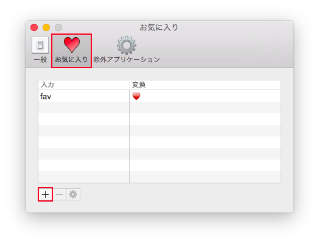
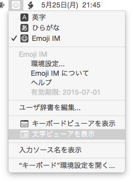

インストール
- 「Emoji IM Installer.pkg」を実行
- 「システム環境設定」を開く
- 「キーボード」環境設定を開く
- 「入力ソース」タブの「＋」ボタンをクリック（「メニューバーに入力メニューを表示」をチェックしておく）
- 「英語」から「Emoji IM」を選択し、「追加」ボタンをクリック
- 「Emoji IM」が追加されたことを確認
アンインストール
- 「システム環境設定」を開く
- 「キーボード」環境設定を開く
- 「入力ソース」タブで「Emoji IM」を選択し、「-」ボタンをクリック
- システム再起動
/Library/Input Methodsから「Emoji IM.app」を削除する
使用方法
入力メニューから「Emoji IM」を選択した状態で、絵文字の名前を大文字で入力してください。変換候補ウィンドウが表示され、候補が絞りこまれていきます。候補を選択するにはTab/Shift-Tabや↑/↓、Control-p/Control-nを、選択した候補の決定はEnterあるいはダブルクリックを行います。候補決定時にOptionを押していると、絵文字の代わりに16進コードポイントが入力されます。
Caps Lockモードを使用する
絵文字を入力するには大文字で入力しますが、これはShiftキィを押しながらか、あるいはCaps Lockキィをオンにして入力します。Emoji IMのCaps LockモードはCaps Lockをオンにしたときだけ、絵文字の入力モードに切り替わるようになります。
- 入力メニューで「Emoji IM」を選択する
- 入力メニューからEmoji IMの「環境設定...」を選択する
- 「一般」タブの「Caps Lock モード」をチェックする
スキントーンを設定する
絵文字で使用する肌色を設定します。
- 入力メニューで「Emoji IM」を選択する
- 入力メニューからEmoji IMの「環境設定...」を選択する
- 「一般」タブの「スキントーン」で肌色を選択する
英数キィを無視する
AppleのJISキィボードの「英数」キィを押すと空白が入力されてしまいます。英数キィの入力を無視するには、
- 入力メニューで「Emoji IM」を選択する
- 入力メニューからEmoji IMの「環境設定...」を開く
- 「一般」タブの「英数キーを無視する」のチェックを入れようとすると、
「アクセシビリティ機能」へのアクセス許可を求めるダイアログが出るので、「“システム環境設定”を開く」ボタンをクリック
- 「プライバシー」タブの「アクセシビリティ」で「 Emoji IM」をチェックする
チェックボックスがグレーアウトして変更できないときは、ウィンドウ左下の錠前アイコンをクリックしてください。
- Emoji IMの「環境設定...」ウィンドウの「一般」タブで「英数キーを無視する」にチェックを入れる
お気に入りを登録する
絵文字のユニコード名ではなく、自分で設定した名前で変換できるようにします。
- 入力メニューで「Emoji IM」を選択する
- 入力メニューからEmoji IMの「環境設定...」を選択する
- 「お気に入り」タブを選択する
- 「+」ボタンをクリックする

- 「入力」欄にお気に入りの名前、「変換」欄にその名前で変換する絵文字を入力する
- 「OK」ボタンをクリックする
除外アプリケーションを設定する
Emoji IMで絵文字変換処理をしたくないアプリケーションを設定することができます。除外アプリケーション上では大文字入力しても絵文字変換モードになりません。
- 入力メニューで「Emoji IM」を選択する
- 入力メニューからEmoji IMの「環境設定...」を選択する
- 「除外アプリケーション」タブを選択する
- 「+」ボタンをクリックする
- ファイル選択パネルが表示されるので、除外したいアプリケーションを選択し、「開く」をクリックする
絵文字の名前を調べる
絵文字の名前を調べるには、入力メニューから「文字ビューア」を起動し、「絵文字」カテゴリィを選択すれば絵文字の名前が表示されます。
- 入力メニューから「文字ビューアを表示」を選択する

- 文字ビューアで「絵文字」カテゴリィから調べたい絵文字を選択する